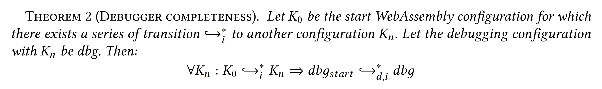

MIO: Multiverse Debugging in the Face of Input/Output
marvel video

Carmen Torres Lopez, Robbert Gurdeep Singh, Stefan Marr, Elisa Gonzalez Boix, and Christophe Scholliers. Multiverse Debugging: Non-Deterministic Debugging for Non-Deterministic Programs (Brave New Idea Paper). In 33rd European Conference on Object-Oriented Programming (ECOOP 2019).


MIO
/maː.joː/ a Multiverse debugger for I/O

How did we build MIO?
How did we build MIO?
Start with a base language
Ensure I/O is well-behaved
Define debugger semantics

Proof correctness

